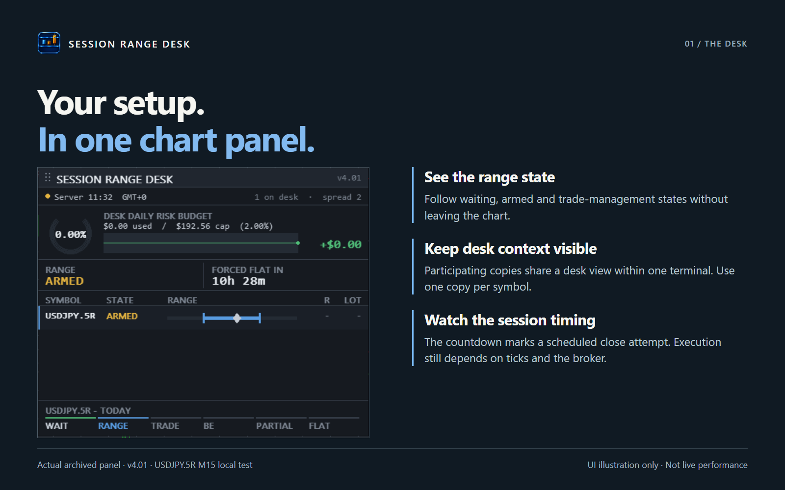

Entry, exit, bar state, timing, data source, and risk rules become one testable manifest before implementation.
EA / PINE CLINIC · ISTANBUL
Break the strategy before coding it.
A good-looking backtest is not the finish line. I turn trading rules into testable systems, push them through hostile scenarios, and show what the evidence does — and does not — support.
Enter the stress lab ↓
No signals. No profit promises. Inspectable engineering.
ROBUSTNESS FIELD / DEMO
interactive
Move your pointer. The field reacts; the evidence stays still.
01 / STRESS LAB
Change the conditions.
Watch the weak point move.
Two versions of the same idea under one pressure: with the break map applied, and without it. A synthetic explainer, not market data.
SYNTHETIC EXPLAINER — NOT PERFORMANCE
checks exposed3 / 3
risk loadNORMAL
first breakSLIPPAGE
control gap+16 pts
02 / REAL CASE
Session Range Desk MT5
A public, free MQL5 Expert Advisor used here as a proof-boundary example.

FIG. 01 / MARKET SHEET
WHAT IT SUPPORTS
This sheet is live on the public MQL5 Market product page; the panel inside it is an archived capture of the real interface (v4.01, USDJPY.5R M15 local test); the project records local compile and nonvisual tester checks.
WHAT IT DOES NOT PROVE
Inspect the public product ↗
Profitability, live-account safety, broker independence, or prop-firm eligibility.
03 / METHOD
One chain.
Three honest checkpoints.
Open a checkpoint to see what changes hands before the next stage begins.
Costs, gaps, restart behavior, repaint risk, and regime changes are isolated instead of blended into one flattering result.
Screens, settings, versions, source links, and explicit evidence limits travel together.

ERDEM MÜMİN KAYNAK
MQL5 DEVELOPER
ISTANBUL / TÜRKİYE
04 / PROFILE
A working portfolio.
Not a sales funnel.
This site collects the MQL5 products, Pine experiments, test notes, and evidence packages I can publish.
Next public layer: an MQL5 Signal account, after its evidence boundary is ready.